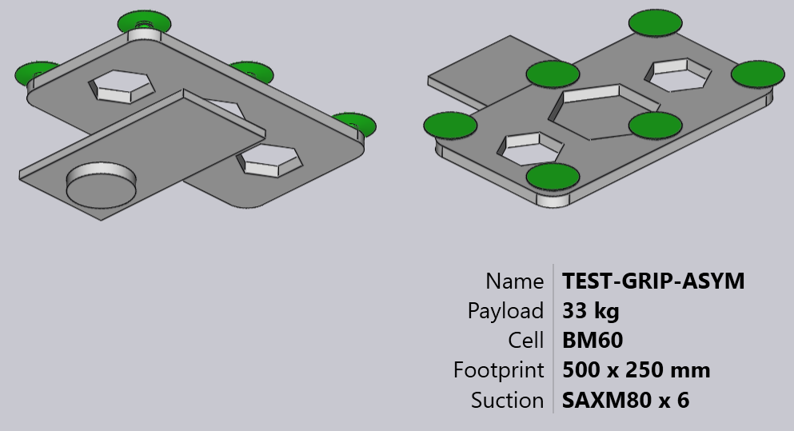

นำเข้ากรรไกรจาก DXF
กรรไกรดูดสุญญากาศสำหรับเครื่อง BendMaster สามารถนำเข้าจากไฟล์ DXF ได้ ไฟล์ DXF แสดง*มุมมองด้านบน*ของกรรไกร (มุมมองด้านบนหมายถึงจากถ้วย ดูด ไม่ใช่จาก BendMaster) เอนทิตี POLYLINE ในไฟล์ DXF ให้รูปร่าง ของแผ่นกรรไกร และเอนทิตี TEXT ให้ข้อมูลเพิ่มเติมเกี่ยวกับกรรไกร (เช่น ชื่อ ความหนา และตำแหน่งถ้วยดูด)
ไฟล์ในรูปแบบที่ต้องการ (DXF, ARV หรือ GEO) สามารถนำเข้าสู่ฐานข้อมูล Bend ได้
ในการนำเข้ากรรไกร:
-
เปิด Database ภายใน TecZone Bend
-
เลือกตัวเลือก Bend Grippers จากรายการ
-
คลิกที่ตัวเลือก Import… และเลือกกรรไกรเป็นไฟล์ DXF จากไดเรกทอรี

นี่คือลักษณะของกรรไกรนี้หลังจากนำเข้า (แสดงในสองมุมมองจากด้านล่างและด้านบน)


กรรไกรพื้นฐาน
ดูภาพวาดง่ายๆ ที่แสดงด้านล่าง ซึ่งกำหนดกรรไกรและสามารถบันทึกเป็น ไฟล์ DXF เพื่อนำเข้ากลับเข้าไปใน Gripper inventory

นี่คือประเด็นสำคัญบางประการเกี่ยวกับวิธีการวาด DXF:
-
จุดกำเนิดของภาพวาด (0,0) สอดคล้องกับศูนย์กลางข้อมือของหุ่นยนต์ คุณสามารถ เห็นสิ่งนี้แสดงโดยจุดและวงกลมในรูป (ทั้งจุดและ วงกลมไม่จำเป็นจริงๆ สำหรับการนำเข้ากรรไกร เนื่องจากศูนย์กลางกรรไกรจะ อยู่ที่จุดกำเนิดเสมอโดยปริยาย)
-
ภาพวาดนี้ยังมีเอนทิตี POINT ที่แสดงถึงแต่ละตำแหน่ง ถ้วยดูด อีกครั้ง สิ่งเหล่านี้มีไว้สำหรับทำให้ภาพวาดชัดเจนขึ้นเป็นหลัก และ ไม่ได้ถูกใช้จริงโดยตัวนำเข้ากรรไกร (ตำแหน่งถ้วยดูดถูกระบุ โดยเอนทิตีข้อความ)
-
รูปร่างแผ่นจริงถูกวาดเป็นเอนทิตี POLYLINE ที่ปิด หากคุณมี polylines อื่นๆ อยู่ภายในด้านนอก พวกมันจะกลายเป็น*รู*ในแผ่น


กรรไกรสองชั้น
กรรไกรที่ซับซ้อนกว่าเล็กน้อยสามารถสร้างแบบจำลองโดยใช้เลเยอร์ BASEPLATE แยกต่างหาก สร้าง เลเยอร์ชื่อ BASEPLATE ในไฟล์ DXF และวาดรูปร่าง POLYLINE ที่ปิดบางอันใน เลเยอร์นั้น จากนั้นเลเยอร์นี้สามารถมีขีดจำกัดการดึง Z แยกต่างหากที่ระบุโดย คีย์ BASEPLATEEXTENT เครื่องมือที่จำเป็นในการสร้างและแก้ไขเลเยอร์ได้ถูกเพิ่มแล้ว
-
คลิกที่ Related เมื่อกำลังแก้ไขภาพวาด
-
เลือกเมนู Layers เพื่อเพิ่มเลเยอร์ใหม่ เปลี่ยนชื่อ ตั้งค่าสี และเปลี่ยนรูปแบบเส้น

-
ในภาพวาด การคลิกที่เอนทิตีช่วยให้คุณเปลี่ยนเลเยอร์ของเอนทิตีนั้นได้

เลเยอร์ปรากฏในแผงเอนทิตีเฉพาะเมื่อมีหลายเลเยอร์ในภาพวาด -
หลังจากแก้ไขภาพวาดโดยใช้เครื่องมือเหล่านี้ บันทึกภาพวาดในรูปแบบ DXF นี่คือ DXF ที่วาดโดยใช้เลเยอร์ BASEPLATE ดังกล่าว (แสดงเป็นสีเขียวในภาพ)

สำหรับกรรไกรนี้ ข้อมือขยายจาก Z=0 ถึง Z=23 จากนั้น แผ่นฐาน (สีเขียว) ขยายจาก Z=23 ถึง Z=40 ตามที่ระบุโดยคีย์ BASEPLATEEXTENT สุดท้าย แผ่นกรรไกรจริง (ที่ยึดถ้วยดูด) ขยายจาก Z=40 ถึง Z=63 ตามที่ระบุโดยคีย์ PLATEEXTENT แผ่นกรรไกรยังมีรูหกเหลี่ยมอยู่ในนั้น เมื่อนำเข้า กรรไกรนี้มีลักษณะดังภาพด้านล่าง:

กรรไกรหลายชั้น
กรรไกรหลายชั้น เป็นเวอร์ชันอัพเดตของ กรรไกรสองชั้น ซึ่งมากกว่า สองชั้นสามารถสร้างและนำเข้าได้โดยใช้ TecZone Bend ในการใช้กรรไกรหลายชั้น DXF จะต้องมีข้อความ VERSION = 2 ตัวอย่างกรรไกรหลายชั้น แสดงด้านล่าง:

แต่ละชั้นต้องถูกกำหนดด้วยขอบเขตเช่น LAYER_1 = 23 : 35 เอนทิตี ในชั้นนี้จะถูกเพิ่มไปยังขอบเขตเหล่านี้ ในทำนองเดียวกัน ถ้วยจะถูกกำหนดใน รูปแบบ CupNo = X pos, Y pos, [Cup type, Mounting height, Cup group]
| ตำแหน่ง X และ Y เป็นสิ่งจำเป็น |
คำจำกัดความที่เป็นไปได้ต่างๆ สำหรับถ้วยดูดอธิบายไว้ด้านล่าง:
CupNo = X pos, Y pos โดยชื่อของถ้วยระบุใน CUPNAME เช่นเดียวกับเวอร์ชันก่อนหน้า
CupNo = X pos, Y pos, Cup type โดยแต่ละประเภทถ้วยถูกกำหนดแยกกัน (สำหรับถ้วย
รูปไข่ ชื่อจะแตกต่างกันตามมุม)
CupNo = X pos, Y pos, Cup type, Mounting Height
CupNo = X pos, Y pos, Cup type, Mounting Height, Cup Group
CUP1 = 275, 314, SAOB60x30_90grad_ged, 72, 2
หากไม่ได้ระบุความสูงการติดตั้ง ขอบเขตแผ่นสูงสุดจะถูกพิจารณาเป็นค่าเริ่มต้น ในทำนองเดียวกัน กลุ่มถ้วยดูดจะถูกตั้งเป็น 1 หากไม่ได้กำหนด
| ในขณะนี้ TecZone Bend ไม่รองรับความสูงการติดตั้งที่แตกต่างกันสำหรับถ้วยดูด |
เมื่อนำเข้า ตัวอย่างกรรไกรมีลักษณะดังภาพด้านล่าง:


กรรไกรหลายวงจร
คุณสามารถสร้างกรรไกรหลายวงจร (กรรไกรที่มีวงจรสุญญากาศอิสระหลายวงจร) ได้ สำหรับกรรไกรดังกล่าว แต่ละถ้วยดูดจะถูกกำหนด*หมายเลขกลุ่ม*ที่ไม่ใช่ศูนย์
กำหนดกลุ่มดูดโดยใช้รูปแบบพิเศษสำหรับ CUP1POS, CUP2POS ฯลฯ ดังที่แสดงด้านล่าง:
CUP1POS = 340,120 #6
CUP2POS = 420,140 #8
ค่าหลังจาก # คือหมายเลขกลุ่มดูดสำหรับถ้วย ในตัวอย่างนี้ ถ้วย 1 ถูกกำหนดให้กับกลุ่มดูด 6, ถ้วย 2 ถูกกำหนดให้กับกลุ่มดูด 8 และอื่นๆ
เพื่อให้กรรไกรหลายวงจรได้รับการกำหนดค่าอย่างถูกต้อง ถ้วย*ทุกตัว*ต้องถูกกำหนด หมายเลขกลุ่มดูดในลักษณะนี้
| จำนวนถ้วยดูดสูงสุดที่สามารถใช้ในกรรไกร จำกัดอยู่ที่ 100 หากคุณนำเข้ากรรไกรที่มีถ้วยดูดมากกว่า 100 ตัว TecZone จะแสดงข้อความข้อผิดพลาดการนำเข้าล้มเหลว |
ภาพด้านล่างแสดงตัวอย่างกรรไกรบางส่วนภายในฐานข้อมูล Bend Grippers ของงอ